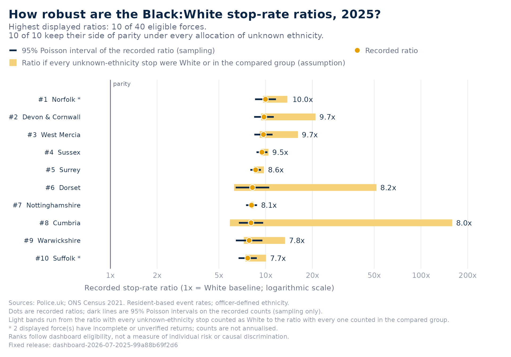
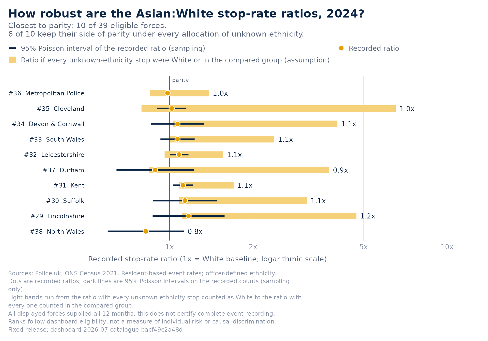
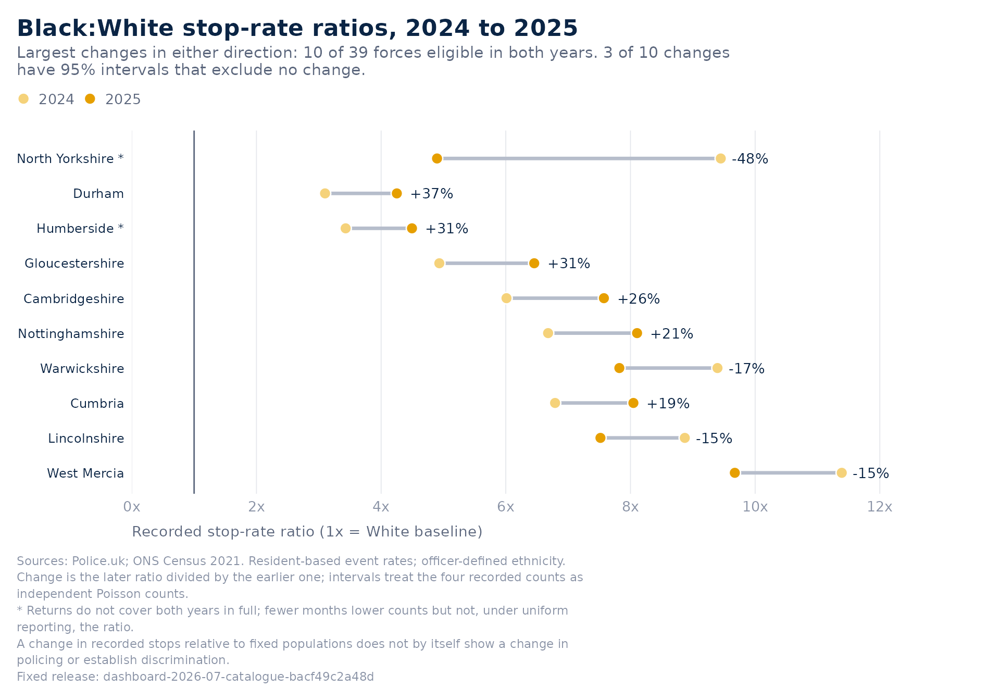
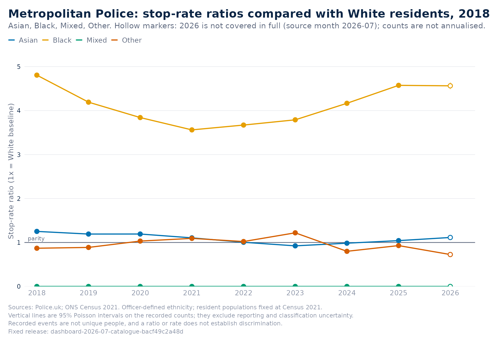

A stop-rate ratio is a simple number built on several choices and on data that are incomplete in known ways. This vignette shows how BlackThriveSS lets you ask, for any force, year and group, which conclusions survive those choices and which depend on them. Everything below runs offline from the bundled release, and every table and chart can be saved and replayed.
Three kinds of uncertainty are kept apart throughout:
- Sampling variability: the 95% Poisson intervals on the recorded counts, and the rank intervals from redrawing those counts.
- Missing ethnicity: stops with no recorded ethnic group are excluded from every ratio. The allocation range reports the ratio under the two extreme allocations of those stops, which bound every other allocation.
- Missing returns: months a force did not submit are missing, never zero, and counts are never annualised. Coverage is reported beside every comparison.
The package does not combine these into one number, because they answer different questions.
Bounds under unknown ethnicity
x <- btg_get_data()
s <- btg_sensitivity(x)
head(s[c("force_label", "unknown_share", "ratio", "ratio_min", "ratio_max", "parity_direction")])
#> force_label unknown_share ratio ratio_min ratio_max parity_direction
#> 1 Norfolk 0.03060758 9.971068 9.616471 13.788563 above
#> 2 Devon & Cornwall 0.03943304 9.748324 9.336930 20.940844 above
#> 3 West Mercia 0.04433498 9.673905 9.134508 16.137257 above
#> 4 Sussex 0.01047202 9.461250 9.338614 10.414488 above
#> 5 Surrey 0.01692525 8.612550 8.419686 9.743609 above
#> 6 Dorset 0.22046747 8.217899 6.250789 51.673153 above
table(s$parity_direction, useNA = "ifany")
#>
#> above <NA>
#> 40 4ratio_min counts every unknown-ethnicity stop as White
and ratio_max counts every one as Black; allocating them in
the same proportions as the recorded stops would leave the ratio
unchanged. parity_direction says whether the whole range
sits above or below 1, or whether the side of parity depends on the
unknown stops. The range can be wide where a group’s resident population
is small, and that is the finding, not a defect.

The same question for a comparison close to parity:
y <- btg_get_data("force_ethnicity_year")
btg_plot_sensitivity(y, year = 2024, group = "Asian", ranking = "closest")
How certain is a rank?
A league-table position is far less certain than the ratio behind it. The rank interval redraws each eligible force’s counts from Poisson distributions with the recorded counts as means and re-ranks every draw; the seed is fixed and the caller’s random number state is restored.
r <- btg_rank_stability(x, draws = 500)
head(r[c("force_label", "ratio", "rank", "rank_lower", "rank_upper", "prob_top")], 12)
#> force_label ratio rank rank_lower rank_upper prob_top
#> 1 Norfolk 9.971068 1 1 6 1.000
#> 2 Devon & Cornwall 9.748324 2 1 7 1.000
#> 3 West Mercia 9.673905 3 1 6 1.000
#> 4 Sussex 9.461250 4 1 6 1.000
#> 5 Surrey 8.612550 5 3 9 0.994
#> 6 Dorset 8.217899 6 1 18 0.704
#> 7 Nottinghamshire 8.105919 7 5 12 0.918
#> 8 Cumbria 8.046936 8 3 17 0.712
#> 9 Warwickshire 7.821879 9 3 19 0.648
#> 10 Suffolk 7.655695 10 5 17 0.546
#> 11 Cambridgeshire 7.573837 11 6 17 0.490
#> 12 Lincolnshire 7.518498 12 4 20 0.450rank_best and rank_worst in
btg_sensitivity() answer the other question: how far every
force’s unknown stops could move the rank if they were allocated for or
against it.
Across every year and group
For a study rather than a single chart, run the same functions over
the full force table. btg_sensitivity() returns one row per
force, year and group, with ranks and bounds within each year and
group.
all <- btg_sensitivity(y)
settled <- all[all$eligible, ]
with(settled, table(group, parity_direction))
#> parity_direction
#> group above below sensitive
#> Asian 258 14 80
#> Black 349 0 3
#> Mixed 51 4 21
#> Other 220 4 121
aggregate(unknown_share ~ year, data = all[all$group == "Black", ], FUN = median)
#> year unknown_share
#> 1 2018 0.04992118
#> 2 2019 0.05637255
#> 3 2020 0.05107371
#> 4 2021 0.05791267
#> 5 2022 0.06480383
#> 6 2023 0.06372176
#> 7 2024 0.04906426
#> 8 2025 0.05122450
#> 9 2026 0.06164379Rank stability over several years and groups is one call; keep
draws modest for exploratory work and raise it for a final
table.
stable <- btg_rank_stability(btg_get_data("force_ethnicity_year", years = 2023:2025, groups = "Black"), draws = 300)
aggregate(cbind(width = rank_upper - rank_lower) ~ year, data = stable, FUN = median)
#> year width
#> 1 2023 7
#> 2 2024 6
#> 3 2025 7btg_robustness_summary() puts the counts a study needs
in one table: one row per year and group, with the number of forces, how
many meet the display rule, how many of those keep their side of parity
under every allocation, the unknown share, the typical width of a rank
interval, how many top-ten places are settled and how many forces have
full-year returns.
btg_robustness_summary(btg_get_data("force_ethnicity_year", years = 2023:2025), draws = 300)
#> year group forces eligible above below sensitive median_unknown_share
#> 1 2023 Asian 43 40 29 1 10 0.06372176
#> 2 2023 Black 43 40 38 0 2 0.06372176
#> 3 2023 Mixed 43 6 4 0 2 0.06372176
#> 4 2023 Other 43 40 29 0 11 0.06372176
#> 5 2024 Asian 42 39 31 1 7 0.04906426
#> 6 2024 Black 42 39 39 0 0 0.04906426
#> 7 2024 Mixed 42 7 6 0 1 0.04906426
#> 8 2024 Other 42 39 29 0 10 0.04906426
#> 9 2025 Asian 42 40 32 1 7 0.05122450
#> 10 2025 Black 42 40 40 0 0 0.05122450
#> 11 2025 Mixed 42 7 5 0 2 0.05122450
#> 12 2025 Other 42 39 32 0 7 0.05122450
#> max_unknown_share median_rank_interval settled_top full_year_returns
#> 1 1.0000000 9.0 7 0
#> 2 1.0000000 7.0 8 0
#> 3 1.0000000 0.5 6 0
#> 4 1.0000000 6.0 9 0
#> 5 0.9990545 10.0 7 40
#> 6 0.9990545 6.0 8 40
#> 7 0.9990545 2.0 7 40
#> 8 0.9990545 6.0 8 40
#> 9 0.3182773 10.5 8 37
#> 10 0.3182773 7.0 6 37
#> 11 0.3182773 2.0 7 37
#> 12 0.3182773 6.0 8 37
#> months_in_source
#> 1 12
#> 2 12
#> 3 12
#> 4 12
#> 5 12
#> 6 12
#> 7 12
#> 8 12
#> 9 12
#> 10 12
#> 11 12
#> 12 12Has the source moved on?
The snapshot is fixed, but Police.uk keeps publishing.
btg_source_status() reads the source’s availability feed,
which lists for each month the forces whose stop and search data are
present, and reports newer months and any force-month inside the
snapshot’s verified window that has since been added or withdrawn. It is
the package’s only use of the network and returns NULL with
a message when the feed cannot be read, so it is not run here.
status <- btg_source_status()
status
status$changesA late addition or a withdrawal is a reason to build a new release, never to edit this one; the proposal’s audit of revisions across releases starts from exactly this comparison.
Change over time, with coverage attached
btg_change() compares each area’s ratio in two years,
with an interval on the ratio of ratios and the coverage of both years.
A change between a complete year and an incomplete one is not a change
in policing.
ch <- btg_change(btg_get_data("force_ethnicity_year", groups = "Black"))
table(ch$change_direction, useNA = "ifany")
#>
#> higher unclear <NA>
#> 9 31 4
head(ch[ch$change_direction %in% c("higher", "lower"),
c("force_label", "ratio_from", "ratio_to", "change", "change_lower", "change_upper", "comparable_coverage")])
#> force_label ratio_from ratio_to change change_lower change_upper
#> 4 Cambridgeshire 6.011442 7.573837 1.259904 1.065722 1.489466
#> 19 Hertfordshire 5.200155 5.731577 1.102193 1.003443 1.210662
#> 20 Humberside 3.430921 4.495046 1.310157 1.039448 1.651369
#> 25 Merseyside 2.364159 2.695715 1.140243 1.074713 1.209769
#> 26 Metropolitan Police 4.165467 4.573408 1.097934 1.078518 1.117699
#> 32 Nottinghamshire 6.678454 8.105919 1.213742 1.080109 1.363908
#> comparable_coverage
#> 4 TRUE
#> 19 TRUE
#> 20 FALSE
#> 25 TRUE
#> 26 TRUE
#> 32 TRUE
And for one force across every year, with the incomplete final year marked:
btg_plot_trend(btg_get_data("force_ethnicity_year", force = "metropolitan"))
Reproduce and share
Every chart carries its table and a saved view. The view pins the release, its checksums, the selection and the settings; it contains no code.
p <- btg_plot_sensitivity(y, year = 2024, group = "Asian", ranking = "closest")
path <- tempfile(fileext = ".json")
btg_save_view(p, path)
replay <- btg_from_view(path)
stopifnot(identical(btg_figure_data(replay), btg_figure_data(p)))
unlink(path)btg_export() writes a dataset to CSV with a JSON sidecar
recording the release, checksums, selection, citation and limitations,
so that a file sent on still says where its numbers came from.
csv <- tempfile(fileext = ".csv")
files <- btg_export(btg_get_data("force_ethnicity_year", years = 2025, groups = "Black"), csv)
basename(files)
#> [1] "file1cca359c22be.csv" "file1cca359c22be.json"
#> [3] "file1cca359c22be-coverage.csv"
unlink(files)Methods in one place
Every quantity above is computed from four recorded numbers per area,
year and group: the group’s recorded stops g, the White
recorded stops w, and the Census 2021 resident populations
P_g and P_w; u is the number of
recorded stops with no recorded ethnicity.
- Rate per 1,000 residents:
1000 * g / P_gand1000 * w / P_w. - Ratio:
(g / P_g) / (w / P_w), withheld whenwis zero or the populations are not comparable. - 95% interval:
exp(log(ratio) ± 1.96 * sqrt(1/g + 1/w)), for positive counts. It treats both counts as independent Poisson counts with fixed denominators. - Allocation range:
ratio_min = (g / P_g) / ((w + u) / P_w)andratio_max = ((g + u) / P_g) / (w / P_w). For any split of the unknown stops between the two groups, with the remainder in other groups, the ratio lies between them. - Rank bounds: a force’s best rank is one plus the number of other
eligible forces whose
ratio_minexceeds itsratio_max; its worst rank is one plus the number whoseratio_maxexceeds itsratio_min. - Rank interval: draw
g* ~ Poisson(g)andw* ~ Poisson(w)for every eligible force, rank the simulated ratios, repeatdrawstimes, and take the 2.5th and 97.5th percentiles of each force’s rank;prob_topis the share of draws in which the force ranks within the toptop. - Change between years:
ratio_to / ratio_fromwith the intervalexp(log(change) ± 1.96 * sqrt(1/g_1 + 1/w_1 + 1/g_2 + 1/w_2)).
Eligibility and ranks follow the dashboard’s display rule: a positive
finite ratio from at least 200 stops with known ethnicity and comparable
resident populations (White residents of at least 50,000, and neither
British Transport Police nor City of London). The audit in
btg_validate() checks that the stored ratios, intervals and
ranks reproduce these calculations.
What these tools do not do
They do not adjust for who is present in an area, impute missing returns, forecast populations past Census 2021, or reconcile officer-defined with self-reported ethnicity. They do not say whether a disparity is discriminatory. They make the evidence, and its limits, explicit enough to argue about.